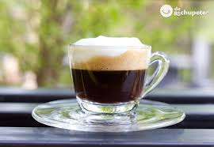
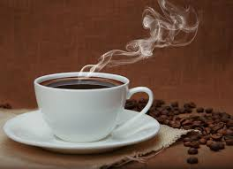

Menu
Descubre nuestra selección de cafés artesanales, preparados con granos de la más alta calidad.



Descubre nuestra selección de cafés artesanales, preparados con granos de la más alta calidad.
El café La Loma es cultivado en fértiles tierras aplicando las mejores prácticas para conservar y exaltar su fragancia y aroma. Café La Loma es un café creado con la sabia experiencia de una región que nos permite disfrutar del perfecto equilibrio entre buen gusto y respeto por la naturaleza
La Cooperativa de Caficultores de Manizales, fundada desde el 22 de agosto de 1960, en los municipios del Centro del Departamento de Caldas y posteriormente se extendió a los de la región Oriente del mismo. Café La Loma es la marca de café tostado desarrollada en la Cooperativa de Caficultores de Manizales, debido a la necesidad de dar valor agregado a los cafés de alta calidad que sobresalen por sus características sensoriales; dando a los caficultores reconocimientos por su labor, mejores precios y garantías que mejoran su calidad de vida.
Es un homenaje a la calidad, rendimos tributo a un caficultor de nuestra región cefetera premiado por su compromiso con la excelencia. Es de origen único, café 100% colombiano de una finca ubicada en el Eje Cafetero, de tueste medio con notas dulces, a chocolate y a frutos secos. Es una experiencia sensorial superior, en grano o molido disfrutas de la frescura y el aroma inigualable de un café cultivado y seleccionado con amor campesino Es la cultura cafetera en cada taza, te traemos la historia, la tradición y el sabor que reflejan la pasión por el café de nuestra región cefetera
El programa Origen Caldas, al cual pertenece nuestro café La Loma, es una estrategia de desarrollo liderada por la Secretaría de Agricultura del departamento de Caldas. Esta estrategia permite impulsar la comercialización de los productos agroindustriales de la región.
Encuéntranos en el corazón de Caldas